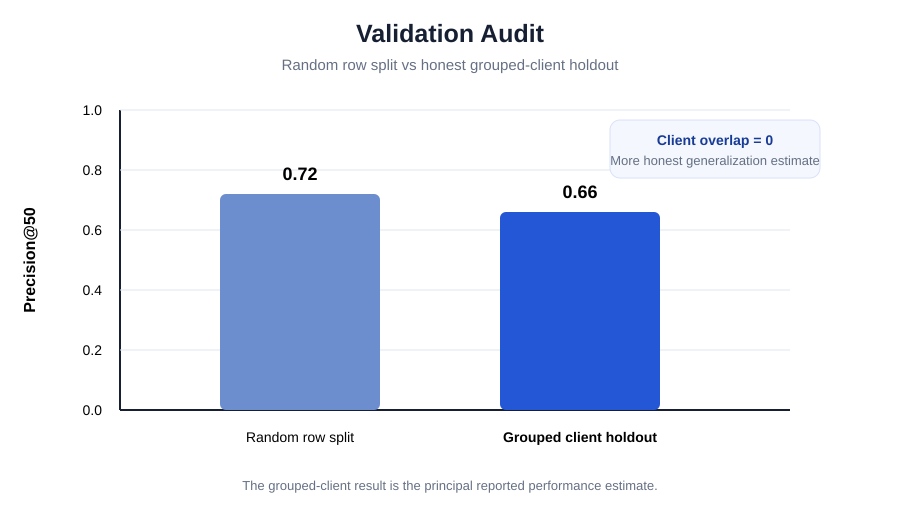
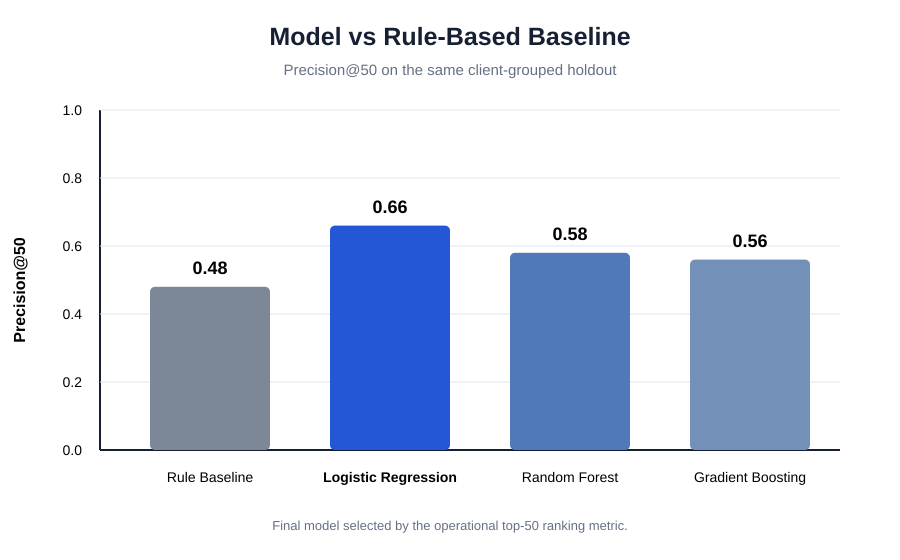
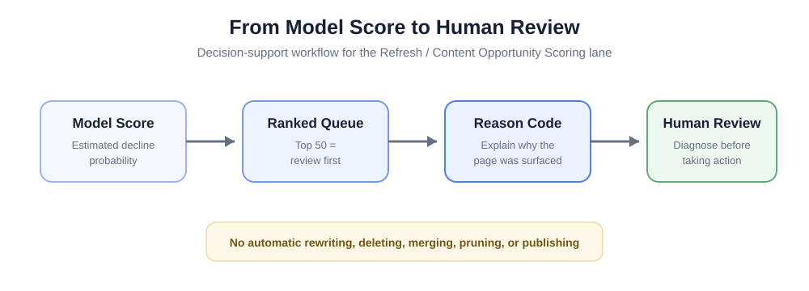

Abstract
For FlyRank's Refresh / Content Opportunity Scoring lane, content teams often manage more pages than they can manually review, creating a practical need to prioritize limited human attention. This study uses pseudonymized FlyRank search and engagement data, aggregating March 2026 observations for 100,893 client-content records and measuring an April 2026 future-decline proxy. A transparent rule baseline was compared with Logistic Regression, Random Forest, and Histogram Gradient Boosting under a client-grouped holdout with zero client overlap, using Precision@50 as the primary decision metric. Logistic Regression achieved Precision@50 of 0.66 compared with 0.48 for the rule baseline, representing a 37.5% relative improvement, while the more complex models did not improve the top-50 ranking. The resulting system is intended to support human page-review prioritization and does not establish causal effects of content changes or universal future performance.
1. Introduction / Problem Statement
In FlyRank's Refresh / Content Opportunity Scoring lane, content and search teams may monitor thousands of pages while having capacity to inspect only a small fraction of them. The operational problem is therefore not simply whether a page can be classified as healthy or declining, but which pages should receive human attention first.
The system is designed as decision support. It ranks review candidates; it does not automatically rewrite or modify content. Because review capacity is limited, Precision@50 is used as the principal operational metric.
2. Data
The analysis is built on the pseudonymized FlyRank ML Internship
warehouse release
flyrank_pseudonymized_warehouse_release_v20260703.
The warehouse includes approximately 79 million daily performance
records. The final experiment uses
fact_content_daily_performance and aggregates daily
observations to one pseudonymized client-content record per feature
window.
Feature window
March 1–31, 2026
Search and engagement measurements are observed before the outcome period.
Outcome window
April 1–30, 2026
April impressions are used only to construct the future outcome.
Pages were retained when March contained at least 100 GSC impressions. After aggregation, eligibility filtering, and matching to the future outcome period, the final modeling dataset contained 100,893 observations.
Predictive features
- 31-day GSC impressions
- 31-day GSC clicks
- 31-day click-through rate
- 31-day average search position
- 31-day GA4 sessions
Public-safety exclusions
Client names, domains, URLs, private queries, credentials, raw private content, target-derived fields, future-window values, FlyRank product scores, and decision flags were excluded from predictors and from the public artifact.
3. Methodology
3.1 Unit of analysis
One observation represents one pseudonymized client × content page.
3.2 Future-decline proxy
Otherwise, the label is 0. The 20% threshold is an operational study definition rather than a universal definition of poor content quality or refresh need.
3.3 Transparent baseline
The Week-4 baseline prioritized pages with meaningful search visibility, average position within the first 20 results, and relatively weak CTR. The baseline provides a simple and interpretable reference that the machine-learning model must honestly outperform.
3.4 Models
Three learned approaches were evaluated:
- Logistic Regression
- Random Forest
- Histogram Gradient Boosting
Logistic Regression was ultimately selected because it achieved the highest Precision@50, the primary operational metric. Greater model complexity was not rewarded when it did not improve the review queue.
3.5 Grouped validation
The final evaluation used a client-grouped holdout. All pages belonging to a test client were kept outside training.
- Training observations: 85,702
- Test observations: 15,191
- Training clients: 34
- Test clients: 9
- Client overlap: 0

Figure 1. Precision@50 decreased from 0.72 under a random row split to 0.66 under the more conservative grouped-client holdout. The grouped result is therefore used as the principal performance estimate.
3.6 Leakage audit
The final feature set contains only measurements available during March 2026. April impressions, the target, label copies, future values, FlyRank product scores, action fields, and target-derived variables were not included as predictive features. Client and content identifiers were used only for joining and grouping.
4. Results
Logistic Regression produced the strongest top-of-queue performance. Precision@50 improved from 0.48 for the transparent rule baseline to 0.66 for Logistic Regression on the same grouped holdout.

Figure 2. Model comparison using Precision@50 on the same client-grouped test set.
| Method | Precision@50 | ROC-AUC | Average Precision |
|---|---|---|---|
| Week-4 Rule Baseline | 0.480 | 0.511 | 0.421 |
| Logistic Regression | 0.660 | 0.573 | 0.484 |
| Random Forest | 0.580 | 0.584 | 0.484 |
| Histogram Gradient Boosting | 0.560 | 0.581 | 0.486 |
Operational interpretation
At Precision@50 = 0.66, approximately 33 of the model's top 50 recommendations met the study's future-decline proxy, compared with approximately 24 of the baseline's top 50.
The relative improvement in the primary metric is:
Random Forest and Histogram Gradient Boosting achieved slightly higher ROC-AUC or Average Precision values, but neither improved the operational top-50 queue. Logistic Regression was therefore retained as the final model.
This result supports improved review prioritization within the defined experiment. It does not establish universal future performance.
5. Limitations & Honest Framing
- The main experiment uses one March-to-April 2026 transition, so performance stability across other seasons and future periods has not been established.
- The 20% decline threshold is an operational proxy rather than a universal definition of content quality or refresh need.
- The March feature window contains 31 days while April contains 30 days. The relatively large decline threshold reduces but does not completely remove calendar-length effects.
- The final inner merge requires pages to appear in both March and April. Pages absent from the April data are excluded, potentially omitting some severe decline or tracking-loss cases.
- Analytics availability is not perfectly balanced across clients and periods. Zero-filled session values can in some cases mix genuine zero activity with unavailable measurements.
- A client-grouped holdout is more conservative than a random row split, but multiple forward-in-time evaluation windows would provide stronger evidence before operational deployment.
- The analysis is observational and predictive. It does not demonstrate that modifying a recommended page will cause its search performance to improve.
- The model does not identify Google's ranking algorithm, and model coefficients or feature associations should not be interpreted as causal ranking factors.
6. Ranked Recommendations / Action Playbook
The final model produces a ranked page-review queue. The first 50 pages form the primary review set because Precision@50 matches the intended review capacity.

Figure 3. The model prioritizes investigation. A human reviewer makes the final content decision.
| Priority | Reason code | Suggested human review |
|---|---|---|
| 1–50 | low_ctr_at_visible_position |
Review search intent, title/snippet fit, and SERP context. |
| 1–50 | high_visibility_low_clicks |
Inspect whether substantial visibility is translating into relevant clicks. |
| 1–50 | page_one_click_gap |
Review page-one visibility together with click capture and intent mix. |
| 1–50 | combined_model_signal |
Perform a broader diagnostic review of the page and related content. |
| 51–200 | Any reason code | Review if capacity remains after the primary queue. |
| >200 | Lower model priority | Monitor rather than act automatically. |
7. Reproducibility
The research workflow, code, executed notebooks, validation design, and decision-support logic are available in the public internship repository. Fixed random seeds are used for reproducible model and split operations where applicable.
8. Acknowledgments & Data Credit
Built on the FlyRank ML Internship dataset .
The analysis uses a pseudonymized internship data release. The public research artifact intentionally excludes client names, domains, URLs, private search queries, credentials, and other private information.